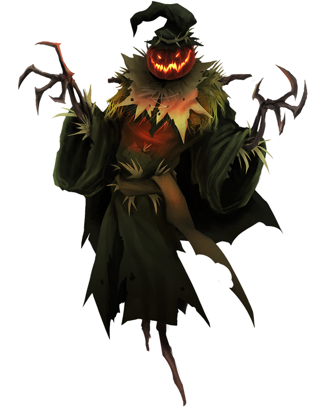
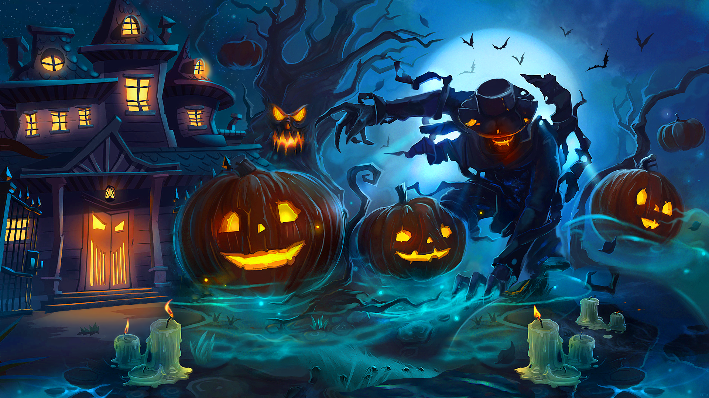
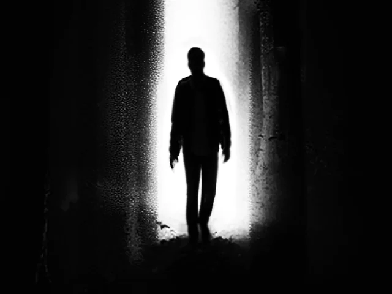
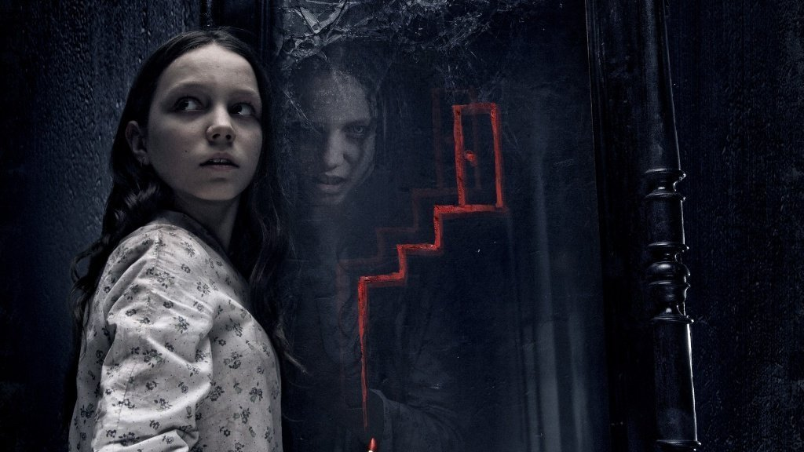
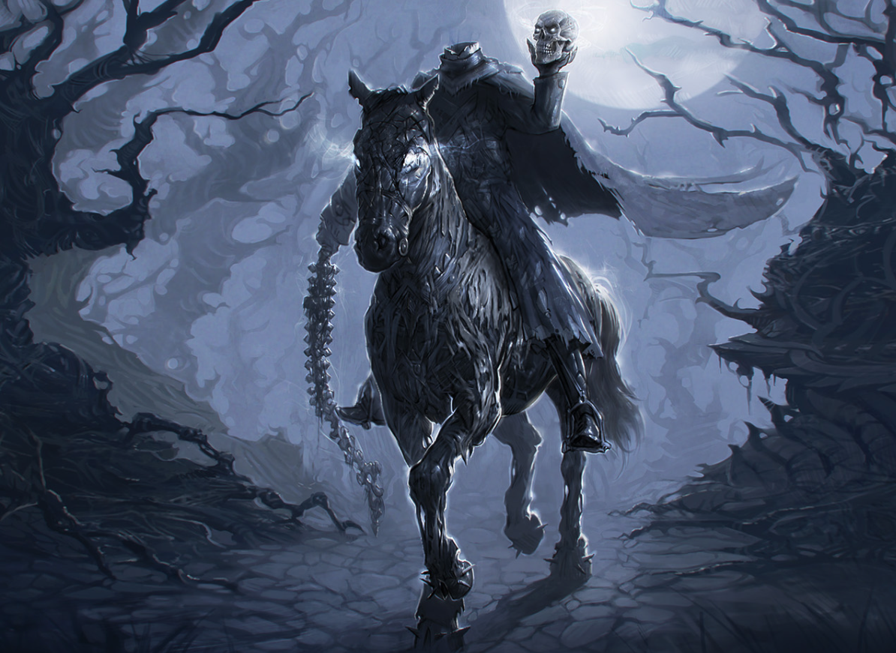
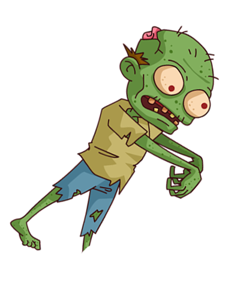

Mystical Stories
If you're too scared, my faithful friend the Scarecrow will help you go back.Just click on him!He's on the right side of the screen
Why do we need stories? To entertain, to transport us to a special—sometimes gloomy but mysterious—realm, to add atmosphere to what's happening.
After all, Halloween night is the night when the gates between the world of the living and the dead open. A night when otherworldly beings—from elves to witches, from fairies to ghosts—are allowed to roam freely on earth.
- The Legend of Jack, in whose honor pumpkins are carved

Long ago lived a clever blacksmith named Jack. One Halloween Eve, he happened to meet the Devil himself. But Jack wasn’t afraid and loved to drink, so he invited Satan to share a pint at a local pub.
When the bill came, Jack convinced the Devil to turn into a coin to pay it. The Devil agreed, in exchange for Jack’s soul.
But Jack slipped the coin into a pocket with a silver cross, stripping the Devil of his powers.
Satan pleaded for release. Jack agreed, on one condition: that his soul would never belong to the Devil. The deal was struck.
Years later Jack died... but Heaven refused him due to his sinful life. He turned to Satan, but the Devil couldn’t take him either. Jack was trapped in eternal limbo.
In the darkness, he asked the Devil for a spark from Hell’s fire. Jack carved out a pumpkin, placed the spark inside to light his way—and has wandered ever since. A symbol of a cursed soul.
- What Happens to Naughty Little Girls
Once there was an old man who knew many scary stories, and he liked to tell them to disobedient girls around the world.
If a girl misbehaved, her mother would invite the old man over for a “disciplinary visit.”
The old man dressed in a long cloak, tall boots, and a hat, packed his magical suitcase, and traveled—sometimes very far. Along the way, he sang songs about killers, maniacs, and monsters.
When he arrived, he asked the mother to leave them alone, since adults were not allowed to hear his terrifying tales.
The mother agreed and left. Upon returning, she found the house quiet, and the girl no longer misbehaving... She was sleeping a dead sleep!
- About Emptiness and Answers

Rumor has it that every year on Halloween night, from 2 to 5 a.m., true emptiness exists in the world. And there is a way to feel it.
Stand in front of a mirror in a dark room, staring at your reflection. Eventually, you'll feel a cold touch.
Then place your right hand on the mirror and whisper: “I agree.”
If done correctly, you will see the image of a child—not a normal baby, but one with coal-black eyes, no skin, and seemingly no emotion.
It will stare into your soul, while you hear buzzing flies and whispering voices.
Fear will flood you. The child will ask questions about life in a non-human, hollow voice.
Each wrong answer makes you lose one of your five senses forever. A right one lets you recall and name a familiar person. But it's no reward—by morning, those people are found dead, missing their eyes and muscles.
- About the Red Mask and the Curse
A normal family: mom, daughter, and son. One Halloween, the mother attended a party. After returning home, she noticed a strange red spot on her face.
It grew larger every day until it consumed her face entirely—and then she died.
Her final words to her children: never go to the cemetery.
But that night, the boy heard his mother’s voice calling him to the graveyard. He obeyed—and vanished.
The next night, the girl also heard the voice. She obeyed. At the cemetery, she saw her mother in a white dress with a red face. It was a mask.
The girl tried to remove it, but it stuck to her own face instead.
The mother had passed on the curse… She kissed her daughter on the forehead and left for home. Since then, the girl has roamed in a red mask, scaring people...
- Fortune-Telling with the Queen of Spades

One day, three friends decided to summon the Queen of Spades. They poured water into a glass, placed a mirror beside it, and said, “Come, Queen of Spades!”
At midnight, they heard creaking doors and footsteps. The first girl went to check—but never came back. The second followed—and also disappeared.
The third was terrified and hid in the closet.
In the morning, the second girl was found dead in the bathroom with three dots on her neck. The first was found three days later in a damp basement, also dead.
The third girl, in shock, told everything about the summoning.
None of them knew that to get rid of the Queen of Spades, they had to smash the mirror on the floor.
- Switched Roles
One day, a girl named Tanya went to a Halloween party. She wore a costume and makeup—and to stand out, she wore red contact lenses with black pupils.
After the party, she couldn’t find her lens container. She decided to walk home in them through alleyways.
But something went wrong… A man started following her. “A maniac,” she thought. He sped up. She panicked.
He came close, placed his hand on her shoulder, and whispered: “Don’t resist. You’ll live.”
Then Tanya remembered the lenses. Slowly turning to him, she looked into his eyes and said sweetly, blood-chillingly: “Oh, I wasn’t planning to resist…”
Her vampire stare pierced the man. The streetlight hit her eyes just right.
The terrified man ran like the wind—he hadn’t expected that!
- The Legend of the Headless Horseman

Near New York lies a place called Sleepy Hollow, beside an old village founded in 1640 by Dutch settlers. It seems calm and peaceful.
But there’s a nearby forest—nothing remarkable, but weak-hearted people should avoid it.
It’s said to be haunted by one of the most mysterious ghosts: the Headless Horseman. Locals firmly believe the legend. There’s even a café named after him.
He’s believed to be the ghost of a cavalryman buried there without his head, which was blown off by a cannonball during battle.
Since then, his headless spirit roams Sleepy Hollow at night, searching for his head...
By the way, Halloween is peak tourist season there—it's believed you’re most likely to encounter the Horseman at that time.

You actually made it to the end. I was sure you wouldn’t! Your psyche is solid. But what will you do if I say it’s all true?